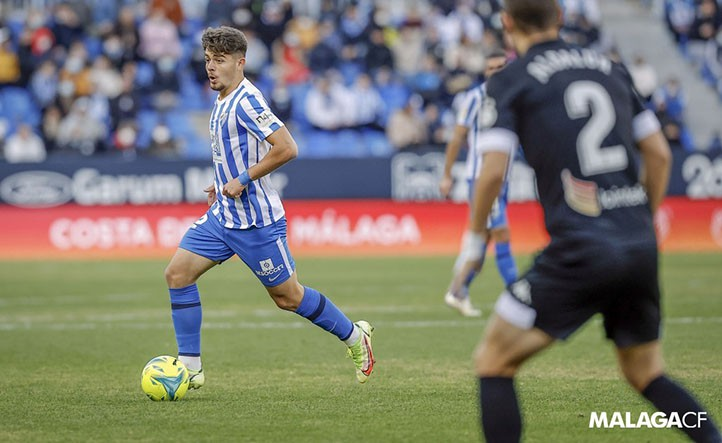
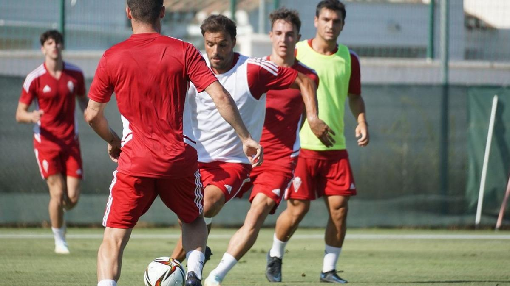
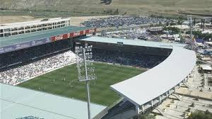
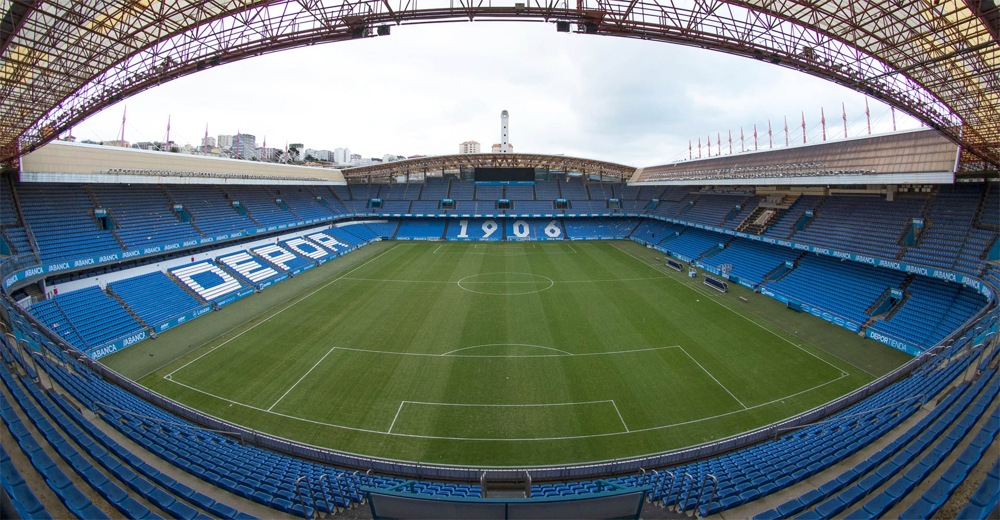

Fútbol al Área
Todo lo relacionado con la Primera Rfef
Noticias:
El Córdoba CF a dar buena imagen en casa.
La victoria contra el Murcia da confianza a la plantilla.

El Castellón CD no quiere frenar.
Suman dos victorias y quieren la tercera.

El Málaga CF buscará su segunda victoria.
La victoria contra el Atlético B fue sufrida siendo en casa.

El Real Murcia quiere borrar las dudas.
La plantilla quiere dar un paso adelante en la próxima jornada.
Resultados:
| Local | Grupo I | Visitante |
|---|---|---|
| RC Deportivo | 0-0 | Rayo Majadahonda |
| Osasuna ¨B¨ | 0-0 | UE Cornellá |
| Unionistas | 0-0 | Sestao River Club |
| Gimnástic de Tarragona | 0-0 | CD Arenteiro |
| CD Lugo | 0-0 | CD Teruel |
| Real Sociedad ¨B¨ | 0-0 | SD Tarazona |
| Real Unión | 0-0 | CE Sabadell FC |
| CF Fuenlabrada | 0-0 | CyD Leonesa |
| SD Logroñés | 0-0 | FC Barcelona ¨B¨ |
| SD Ponferradina | 0-0 | RC Celta ¨B¨ |
| Local | Grupo II | Visitante |
|---|---|---|
| AD Mérida | 0-0 | Linares |
| At. de Madrid ¨B¨ | 0-0 | Antequera CF |
| CD Castellón | 0-0 | Málaga CF |
| CD Atlético Baleares | 0-0 | Algeciras CF |
| San Fernando CD | 0-0 | AD Ceuta |
| Real Madrid Castilla | 0-0 | UD Melilla |
| CD Alcoyano | 0-0 | Atlético Sanluqueño |
| Córdoba CF | 0-0 | UD Ibiza |
| Recreativo de Huelva | 0-0 | CF Intercity |
| Granada ¨B¨ | 0-0 | Real Murcia CF |
Clasificación:
Grupo I
| POS. | EQUIPO | PTS |
|---|---|---|
| 1º | RC Deportivo | 0 |
| 2º | R.Majadahonda | 0 |
| 3º | Osasuna Promesas | 0 |
| 4º | Cornellá | 0 |
| 5º | Unionista CF | 0 |
| 6º | Sestao River | 0 |
| 7º | Gimnástic Tarragona | 0 |
| 8º | Arenteiro | 0 |
| 9º | CD Lugo | 0 |
| 10º | Teruel | 0 |
| 11º | Real Sociedad B | 0 |
| 12º | Tarazona | 0 |
| 13º | Real Unión Club | 0 |
| 14º | Sabadell | 0 |
| 15º | Fuenlabrada | 0 |
| 16º | Cultural Leonesa | 0 |
| 17º | SD Logroñés | 0 |
| 18º | Barca Atlétic | 0 |
| 19º | Ponferradina | 0 |
| 20º | Celta B | 0 |
Grupo II
| POS. | EQUIPO | PTS |
|---|---|---|
| 1º | Linares | 0 |
| 2º | Atlético Baleares | 0 |
| 3º | UD Melilla | 0 |
| 4º | UD Ibiza | 0 |
| 5º | Málaga CF | 0 |
| 6º | Córdoba CF | 0 |
| 7º | Castellón CD | 0 |
| 8º | Algericas CF | 0 |
| 9º | Real Murcia | 0 |
| 10º | AD Mérida | 0 |
| 11º | AD Ceuta | 0 |
| 12º | San Fernando | 0 |
| 13º | Alcoyano | 0 |
| 14º | At.Sanluqueño | 0 |
| 15º | CF Intercity | 0 |
| 16º | Recreativo | 0 |
| 17º | RM Castilla | 0 |
| 18º | At.Madrid B | 0 |
| 19º | R.Granada | 0 |
| 20º | Antequera | 0 |
Próxima Jornada:
Grupo I
- RC Deportivo vs Rayo Majadahonda
- Osasuna ¨B¨ vs UE Cornellá
- Unionistas vs Sestao River Club
- Gimnástic de Tarragona vs CD Arenteiro
- CD Lugo vs CD Teruel
- Real Sociedad ¨B¨vs SD Tarazona
- Real Unión vs CE Sabadell FC
- CF Fuenlabrada vs CyD Leonesa
- SD Logroñés vs FC Barcelona ¨B¨
- SD Ponferradina vs Celta ¨B¨
Grupo II
- AD Mérida vs Linares
- Atlético de Madrid ¨B¨ vs Antequera CF
- CD Castellón vs Málaga CF
- CD Atlético Baleares vs Algeciras CF
- San Fernando CD vs AD Ceuta
- RM Castilla vs UD Melilla
- CD Alcoyano vs Atlético Sanluqueño
- Córdoba CF vs UD Ibiza
- RC Recreativo de Huelva vs CF Intercity
- Granada ¨B¨ vs Real Murcia CF
Estadios:

Árcangel,Capacidad:21.822 espectadores.

Castalia,Capacidad:15.500 espectadores.
Enrique Roca, Capacidad:31.179 espectadores.

Riazor, Capacidad:32.490 espectadores.
Goleadores:
Grupo I
- Raúl Blanco - 2 goles (Celta Fortuna)
- Pibe - 2 goles (Arenteiro)
- Jordi Escobar - 2 goles (SD Logroñés)
- Clau Mendes - 2 goles (Cornellá)
Grupo II
- Jesús de Miguel - 3 goles (Castellón CD)
- Antonio Casas - 3 goles (Córdoba CF)
- F.Mwepu - 3 goles (At. Sanluqueño)
- Nico Paz - 3 goles (RM Castilla)